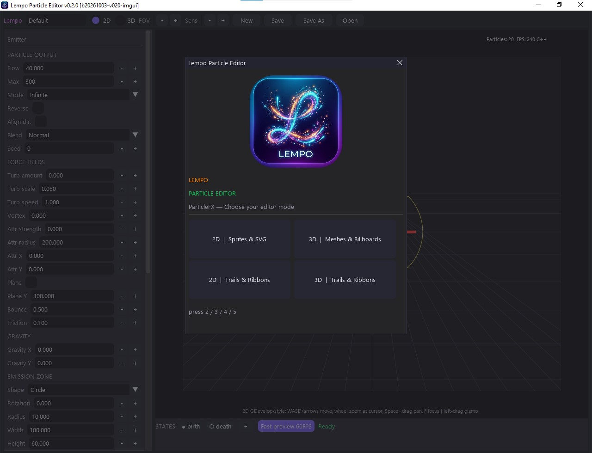

Installation & First Run
Two minutes from download to your first live particle effect.
1. Get the editor
Download LempoParticleEditor.exe from the
Releases
page (or from itch.io) and run it —
no Python installation required.
| Requirement | Value |
|---|---|
| OS | Windows 10/11 (64-bit) |
| GPU | Any GPU with OpenGL 3.3 support |
| Editor version | v0.2.0 (shown in the window title) |
| Pairs with | Extension v0.2.0 · export format v1.2
(v1.0 and v1.1 files migrate automatically) |
2. Choose your editor mode
The first thing you see is the startup dialog — the app logo plus four mode cards. Each mode pairs a renderer (2D sprites / 3D meshes) with a simulation style (classic particles / trails & ribbons):

| Key | Mode | Best for |
|---|---|---|
| 2 | 2D | Sprites & SVG | 2D games: point sprites, SVG shapes, images |
| 3 | 3D | Meshes & Billboards | 3D scenes: spheres, cubes, custom GLB models, billboards |
| 4 | 2D | Trails & Ribbons | Sword slashes, speed lines, magic beams in 2D |
| 5 | 3D | Trails & Ribbons | Arrows, projectiles, ribbons in 3D |
3. Play with a template
Load a template
The editor starts on the Default effect. Use the template list in the sidebar (Explosion, Fire, Rain, Snow — 2D + 3D variants) to load a finished effect.
Watch it live
The Dear PyGui main viewport renders through its drawlist, with an optional OpenGL raster layer for dense scenes. Use Browser Fast Preview for the separate Three.js/PixiJS preview window; it syncs edits every 500 ms.
Tweak the numbers
Flow, lifetime, colors, gravity, blend mode… every change shows up immediately. Ctrl+Z undoes — 100 steps deep.
Export
Hit Export JSON (or Save) and you get an
.json effect file validated against the export schema — ready for the
GDevelop extension.
Run from source / rebuild
pip install dearpygui
python editor/studio_imgui.py # Dear PyGui UI (full features)Tk fallback (shared logic layer — no blend/seed/force-field widgets, but those values are preserved on round-trip):
python editor/particle_studio.pyRebuild the packaged app (compile check → C++ core build if stale → PyInstaller → smoke test → Windows shortcut):
python tools/rebuild_app.pyThis produces dist/LempoParticleEditor.exe plus the Lempo Particle Editor
desktop shortcut (both carry the Lempo icon).
dist/, *.exe, *.pyd,
node_modules/) are never committed — they are rebuilt locally and shipped through
GitHub Releases.Next steps
Editor Tour →
Learn every panel: emitter, force fields, states, shapes, navigation.
GDevelop Guide →
Import the extension and play your effect in-game.